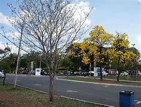
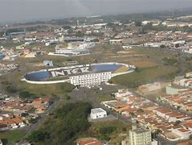
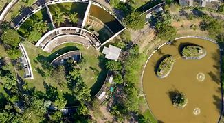
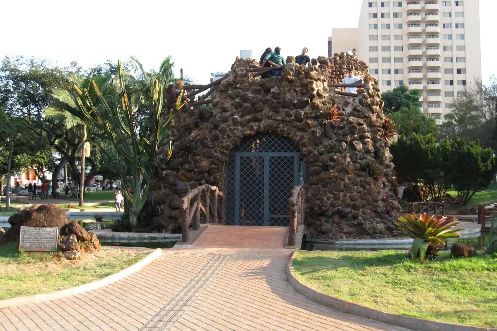
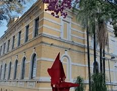
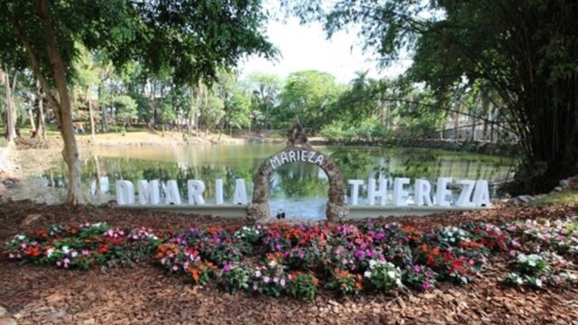
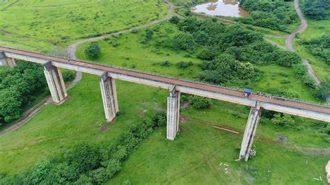

Citaremos abaixo os principais pontos turísticos de Limeira
Pátio limeira
Um dos principais shoppings da cidade

Parque da cidade
O parque e um bom luar para passar a tarde com seu ambiente verde e bem cuidado

Limeirão
Para os fãs de futebol, o Estádio Major José Levy Sobrinho, mais conhecido como Limeirão, é
um ponto de destaque.
Teatro Vitória
O Teatro Vitória é o principal espaço cultural de Limeira, oferecendo uma agenda
variada de peças de teatro, shows musicais e apresentações artísticas.

Horto florestal
Se você gosta de trilhas e contato direto com a natureza, o Horto Florestal de
Limeira é uma excelente escolha.
Igreja de Nossa Senhora da Boa Morte e Assunção
A Igreja de Nossa Senhora da Boa Morte e Assunção é um dos marcos religiosos de
Limeira. Construída em estilo colonial, a igreja é um importante ponto de
peregrinação e devoção na cidade.

Gruta da Paz
A Gruta da Paz é um ponto de interesse religioso e de contemplação. O espaço é bastante visitado por devotos e turistas que buscam momentos de reflexão e paz interior.

Museu Major José Levy Sobrinho
Para os amantes de história, o Museu Major José Levy Sobrinho oferece uma imersão na trajetória de Limeira e da região.

Bosque Prefeita Maria Thereza
O Bosque Prefeita Maria Thereza é um grande parque urbano que oferece áreas de lazer, espaços para piqueniques e trilhas para caminhadas. Com árvores centenárias e uma atmosfera tranquila, o bosque é ideal para quem procura um espaço para relaxar ou praticar esportes ao ar livre.

Ponte do Esqueleto
Outra atração imperdível em Limeira é a Ponte do Esqueleto, uma estrutura icônica e cheia de histórias intrigantes,
Conhecida por sua arquitetura única e atmosfera mística, a ponte é um ponto de interesse para turistas e moradores.
Pátio limeira
Um dos principais shoppings da cidade
Parque da cidade
O parque e um bom luar para passar a tarde com seu ambiente verde e bem cuidado
Limeirão
Para os fãs de futebol, o Estádio Major José Levy Sobrinho, mais conhecido como Limeirão, é um ponto de destaque.
Teatro Vitória
O Teatro Vitória é o principal espaço cultural de Limeira, oferecendo uma agenda variada de peças de teatro, shows musicais e apresentações artísticas.
Horto florestal
Se você gosta de trilhas e contato direto com a natureza, o Horto Florestal de Limeira é uma excelente escolha.
Igreja de Nossa Senhora da Boa Morte e Assunção
A Igreja de Nossa Senhora da Boa Morte e Assunção é um dos marcos religiosos de Limeira. Construída em estilo colonial, a igreja é um importante ponto de peregrinação e devoção na cidade.
Gruta da Paz
A Gruta da Paz é um ponto de interesse religioso e de contemplação. O espaço é bastante visitado por devotos e turistas que buscam momentos de reflexão e paz interior.
Museu Major José Levy Sobrinho
Para os amantes de história, o Museu Major José Levy Sobrinho oferece uma imersão na trajetória de Limeira e da região.
Bosque Prefeita Maria Thereza
O Bosque Prefeita Maria Thereza é um grande parque urbano que oferece áreas de lazer, espaços para piqueniques e trilhas para caminhadas. Com árvores centenárias e uma atmosfera tranquila, o bosque é ideal para quem procura um espaço para relaxar ou praticar esportes ao ar livre.
Ponte do Esqueleto
Outra atração imperdível em Limeira é a Ponte do Esqueleto, uma estrutura icônica e cheia de histórias intrigantes, Conhecida por sua arquitetura única e atmosfera mística, a ponte é um ponto de interesse para turistas e moradores.